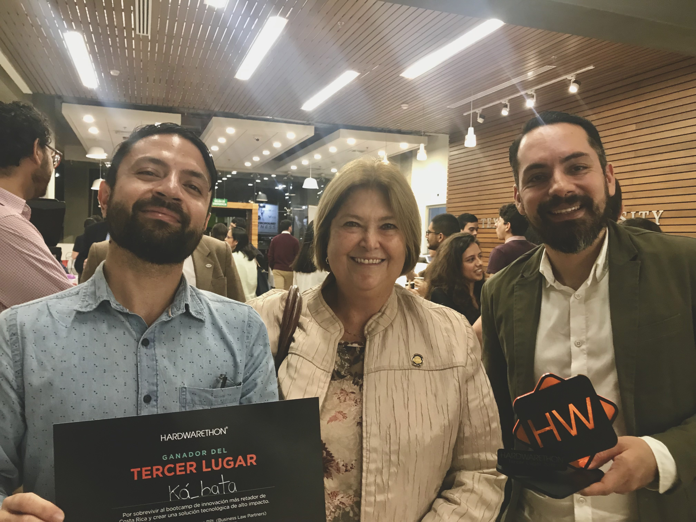
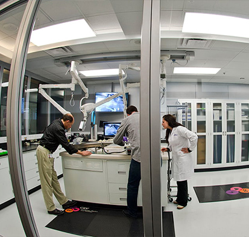

Hardwarethon is a space where people from several professional backgrounds
(design, engineering, software, hardware, social sciences, art, among others)
build teams in order to develop high-impact technological solutions for society.
Through an intensive training process, participants are prepared to develop, in
just 48 hours, a business model and a 100% functional prototype that responds to
a problem raised.

Our team proposed a technology addressing an application for development process
monitoring of coffee production in its natural environment. Te main purpose of this
delivery was to apply concepts of several disciplines as UXUI design, psicology and
also electronic, material and programming science engineering.
This application will help local farmers and agricultural sector in general, helping
local economy of small neigbourhoods in Central Valley in Costa Rica. The idea came out
from a mix of coffee-lovers, engineers and friends who love technology.
The main event was joined by Tourism and Science-Tecnology Ministers of Costa Rica
during the awards ceremony.
$22K COST REDUCTION FOR EQUIPMENT CALIBRATION PROCESS
Winning Spirit Award

As we already know, one of the key points for a company's success is the efficiency
increase and cost reduction projects essentially in manufacture process-oriented
companies. To do this is highly needed keeping quality as main target since quality
assurance is non-negotiable even more in healthcare products.
During 2017, we aimed for a path that led us to this purpose without putting any
risk on the product making nor the process balance. The initial assessment showed up
some gaps at process level producing waste of effective time in calibration equipment
process.
After identifying the main issues the process had, we decided to improve the process
by researching new techniques using new technologies on the market that allowed us not
only improving efficiency but also taking care of the final quality in manufactured
products. The final deliver was reconized by the management board and I was mentioned by
the company's higher-ups.
New Lay-out implementation for Calibration Lab in CER1 facility
Area in Hospira Costa Rica Spirit to provide better services to
customers.
This project was intended to fulfill the necessity of re-layout due to
calibration laboratory expansion. At that time, Quality Management board
were purchasing high technology measurement equipment to reach the new company
requirements and we were called innovation team.
The main target was to use properly the space within the lab so a
multidisciplinary team of Industrial, Electronic and Mechanic Engineers
plus job safety specialists, were working in the re-installation and
commisioning following Regulatory affairs of all the lab equipment.
This project was done in two weeks and the final deliver was really helpful
to the Quality Assurement dept since a Medical Devices company must fulfil
the utmost demand traits in regulatory affair.